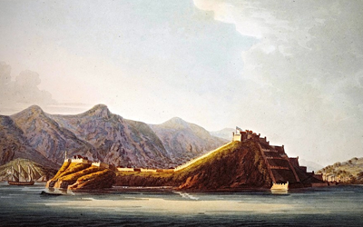
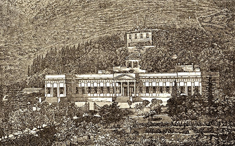

Изгнание на Эльбу
Итак, мы оставили императора Наполеона I Бонапарта 28 апреля 1814 года на борту британского фрегата Неустрашимый, отплывшего из местечка Сан-Рафаэль и доставившего нашего героя в ссылку на уединённый остров Эльбу в Тирренском море, ставший в 1802 году французским владением, и предоставленный ему в пожизненное управление.
Порт Сан-Рафаэль примечателен не только тем, что отсюда французский император отправился в своё первое изгнание, но ещё и тем, что именно на этот берег ступил генерал Наполеон Бонапарт после триумфальной египетской кампании 1799 года.
На борту Неустрашимого Наполеона встретили с почестями. Русский и прусский комиссары граф Павел Андреевич Шувалов и Фридрих Людвиг Вальдбург-Трухсесс приехали с ним проститься. Любезный с обоими император, тем не менее, поблагодарив за услуги, просил передать Александру I искреннюю признательность, но ни словом не упомянул короля Фридриха-Вильгельма II. Австрийский барон генерал Коллер и английский комиссар полковник Нейл Кэмпбелл сопровождали Наполеона на Эльбу.
И вот 3 мая вдали показалась Эльба. Наполеон с нетерпением, взойдя на бак, как только земля стала видна с палубы, пытался разглядеть, чей флаг развевается на батареях. При приближении фрегата над бастионами Порто-Феррайо взвился флаг Империи. Это обеспечили, посланные заранее на берег с поручением от Наполеона принять во владение остров, генерал Друо, граф Клам и старший лейтенант Гастингс. Около 8 часов пополудни фрегат бросил якорь у входа в гавань, и вскоре после этого депутация властей острова поднялась на борт судна и, представившись своему новому государю, поздравила его с прибытием.
Наполеон не был бы самим собою, если бы практически сразу не принялся за дело и не развил бурную деятельность... Ещё в дороге он прочёл материалы об истории острова и его нынешнем состоянии; на фрегате набросал проект государственного флага острова. У него была книга с изображением всех флагов Тосканы, древних и современных. На белом полотнище он разместил по диагонали красную ленту с тремя пчелами, символизирующими трудолюбие островитян. Пчёлы были и в гербе императора. Капитан фрегата поручил судовому портному сшить два таких флага, чтобы вывесить их по прибытию на Эльбу.
Сначала император объехал верхом свои владения, осмотрел земли, имущество, дороги, казармы и оборонительные сооружения, посетил копи, солеварни, шахты по добыче железа, а затем занялся устройством своих новых владений. Он задумал преобразить весь остров, превратив его в цветущий сад, о чём заявил при высадке: Это будет остров отдохновения.
26 мая на Эльбу прибыл генерал Пьер Жак Этьен Камбронн с солдатами старой гвардии, пожелавшими последовать за императором в изгнание. Он и возглавил армию острова в составе 1 600 человек. Это были батальоны корсиканских стрелков, эльбской милиции, старой гвардии, роты гвардейских канониров и матросов, маленького эскадрона польских улан и три роты жандармерии. Новый флот представлял шестнадцатипушечный бриг l'Inconstant и несколько мелких судов, вся флотилия насчитывала порядка 130 человек.
Не забыл Наполеон и о собственной резиденции. Поначалу он вынужден был жить в скромном доме, принадлежавшем местному муниципалитету. Затем он обратил внимание на виллу дей Мулини – два соединённых одноэтажных домика, построенных на месте ветряных мельниц (отсюда и название), расположенную в центре Порто-Феррайо на скалистом берегу моря, с видом на Италию. Наполеон надстроил вторые этажи и превратил дом в небольшой дворец с залом для приемов, кабинетом, салоном, библиотекой и спальней. Палаццо Мулини стал зимней резиденцией Наполоена Бонапарта. Император лично принимал участие в строительстве дворца и проектировании окрестного небольшого, но очень уютного сада, в котором проводил много времени.В Палаццо Мулини Наполеон принимал многочисленных посетителей, в основном англичан, с которыми делил трапезы.
Проводимые Наполеоном мероприятия требовали денег, а с ними у императора было напряжённо, так как кабинет министров игнорировал Третью статью договора, заключенного в Фонтенебло, обязывающую выплачивать Наполеону ежегодную двухмиллионную ренту. И император вынужден был покрывать почти все издержки деньгами из небольшой казны, которую ему удалось вывезти из Тюильри без ведома временного правительства. Из почти четырёх миллионов франков, имевшихся в его распоряжении на момент его прибытия на Эльбу, к январю 1815 года была истрачена треть.
Но несмотря на все заботы, Наполеон с нетерпением ждал известий из Франции, жадно пробегая глазами европейскую прессу, письма, тайную переписку со своими агентами. И надо отметить, что новости для императора были достаточно приятными. Терпение французов начинало иссякать, постепенно росло недовольство политикой Бурбонов. Вернувшиеся к власти роялисты и дворяне-эмигранты вели себя очень нагло. Были случаи избиения крестьян, причем избитый не мог в суде найти управы на обидчика. Людовик XVIII за несколько месяцев пребывания на троне успел настроить против себя большинство французского общества: не только бонапартистов, но и часть буржуазии, армию (особенно солдат и гвардию), крестьян, ремесленников. После снятия континентальной блокады выросла безработица, взвыла торгово-промышленная буржуазия, так как беспошлинные английские товары наводнили рынок, принося ей убытки. Бурбоны, не могли объявить таможенную борьбу против англичан, способствовавших падению Наполеона.
Помимо этого Бонапарт также пристально следил за работой Венского конгресса, с удовольствием потирая руки от того, что в рядах союзников наблюдались разброд и шатания. Таким образом, все в той или иной степени своими действиями разбудили дремлющего в императоре грозного льва: король Людовик XVIII оставил его без денег, император Франц I отнял у него сына, канцлер Меттерних отдал его жену придворному ловеласу, виконт Каслри мечтал сослать подальше с глаз, политик и дипломат Талейран замышлял бросить в темницу, а некоторые даже не исключали его физического устранения.

Последней каплей стал визит на остров бывшего аудитора Государственного совета Флери де Шабулона, рассказавшего по поручению наполеновского министра иностранных герцога Бассано об истинном положении дел в стране, росте всеобщего недовольства политикой Бурбонов, существовании заговора якобинцев и генералов. К тому же, призванный следить за изгнанником, полковник Кэмпбелл воспылал романтическими чувствами к некой тосканке и периодически навещал её за пределами острова. Так что непосредственный контроль за действиями Наполеона несколько ослаб. 14 февраля 1815 года Кэмпбелл вновь оставил Эльбу. Когда же он срочно вернулся 28 февраля, Наполеона и след простыл.
Генералы приняли известие с восторгом, хотя Друо сомневался в успехе. Накануне Наполеон составил и приказал тайно отпечатать две пламенные прокламации – к французскому народу и к армии. Конечно, в них он все свои неудачи приписал измене маршалов Мармона и Ожеро, кабы не они, союзники нашли бы свои могилы на полях баталий Франции. Бурбоны, навязанные Франции иностранными державами, ничему не научились и ничего не забыли. Право народа они хотели заменить правами феодалов. Французы! В изгнании услышал я ваши жалобы и ваши желания: вы требовали правительства по собственному выбору, только такое и является законным. Я переплыл моря и явился снова овладеть своими правами, являющимися вместе с тем и вашими правами, – сказал он народу. Солдаты! Приходите и становитесь под знамена вашего вождя. Его существование тесно связано с вашим; его права – права народа и ваши... Победа идет форсированным маршем. Орел с национальными цветами полетит с колокольни на колокольню, вплоть до башни собора Парижской богоматери, – провозгласил он армии...
26 февраля все было готово. Выехав на площадь перед Морскими воротами, карета Наполеона остановилась....